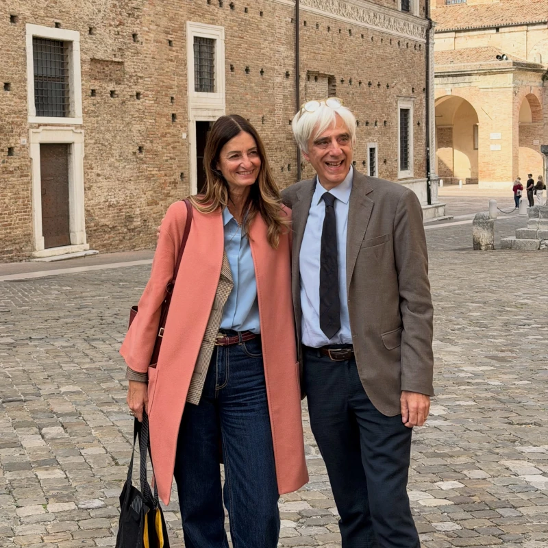

Elezione del Rettore · 5 e 6 ottobre 2026
Marco Rocchi è il nuovo Rettore eletto dell'Università di Urbino
Guiderà l'Ateneo nel sessennio 2026-2032, con il 59,57% dei voti ponderati ottenuti al ballottaggio.

Marco Rocchi è il nuovo Rettore dell'Università degli Studi di Urbino Carlo Bo. Eletto al termine del ballottaggio, che si è svolto il 5 e 6 ottobre, ha ottenuto il 59,57% dei voti ponderati rispetto al 34,93% riportato dal professor Giovanni Boccia Artieri. La prof.ssa Berta Martini sarà la nuova prorettrice vicaria.
Hanno partecipato al voto docenti, personale tecnico-amministrativo, bibliotecario, CEL e componente studentesca, secondo le modalità previste dal sistema elettorale di Ateneo.
«Sono fiero di guidare l'Università che ho cominciato ad amare da studente e nella quale ho percorso tutti i gradini della carriera accademica. L'orgoglio più grande è quello di prendere in mano il timone di un Ateneo che, in un momento di oggettiva difficoltà congiunturale, ha risposto con una partecipazione massiccia a questa tornata elettorale. È il miglior segnale di una Università viva e vitale.»
Marco Rocchi, Rettore eletto
Professore ordinario di Statistica medica presso il Dipartimento di Scienze Biomolecolari, Marco Rocchi è stato direttore del Dipartimento (DiSB) e presidente della Giunta nazionale del Collegio dei Docenti Universitari di Statistica Medica.
Entrerà in carica il 1° novembre 2026, succedendo a Giorgio Calcagnini, Rettore dal novembre 2020.